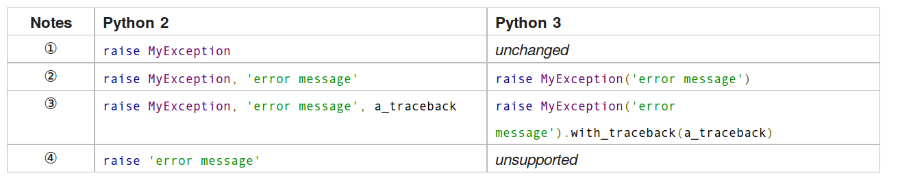

python2和python3的移植问题
本文停写了，后面的代码将完全基于python3，不会考虑这些问题了。
1 前言
本文主要讨论python2和python3的区别，以及如何从python2移植到python3或者如何写出更具python3兼容性的python2代码等等。
2 2to3内置模块
python有个 2to3 内置模块可以自动进行python2脚本到python3脚本的移植工作，不过我感觉最好是不要过分依赖这个工具，这只是适合初学者的。因为python2和python3很多地方不一样了。如果你对这个模块有很深的了解，可能自己手工进行修改会更合适一些（其中可能会涉及到新的编写思路）。
2to3模块简单的使用就是：
2to3 test.py
这个test.py就是你要移植的py文件。
然后如果加上 -w 选项，这个文件就会被原地修改为python3的版本。其他的使用就不多说了，下面主要详细讨论一下python2到python3的移植细节问题。
3 // 和 /
在python2中，两个整数相除会返回一个整数，也就是python3的//。
Python 2.7.6 (default, Mar 22 2014, 22:59:38) [GCC 4.8.2] on linux2 Type "help", "copyright", "credits" or "license" for more information. >>> 5/2 2
3.1 解决方案
from __future__ import division
这样都使用python3的语法规则，即: / 表示常规除法， // 表示整除——返回商。
4 print函数
这是最常见的错误了，推荐第一步就在文档里面进行find print这个字符串操作，然后将所有：
print ...
这样的形式都换成：
print(...)
这是目前python2和python3都兼容的形式了，所以没有什么好犹豫的，大胆的修改就是了。
其中python2
print 1, 2,
似乎还有点小复杂，简单的理解就是对应到python3的
print(1, 2, end=' ')
然后python2支持这样的重定向语法 print >>sys.stderr, 1, 2, 3 ，其对应python3的就是file选项： print(1, 2, 3, file=sys.stderr) 。
4.1 兼容性方案
目前推荐在模块最上面写上:
from __future__ import print_function
然后使用python3的语法来使用print函数。这样python2里面也能正常运行。
5 raise语句
raise语句的移植也是必做的，推荐先搜索字符串raise来查看一下。
diveintopython3表格做的很好，我直接截图过来了。

具体raise某个异常或者raise某个异常提示信息都不需要修改的，就是raise某个异常后面跟着异常提示信息的，需要将其用括号括起来，表示其是异常类的一个参数。然后traceback的情况似乎很复杂。先略过。
5.1 兼容性方案
这种括号语法两边都支持:
raise ValueError("dodgy value")
这里的future模块来自第三方模块future，用 pip install future 安装之。
from future.utils import raise_with_traceback
raise_with_traceback(ValueError("dodgy value"))
这种as表示两边都支持:
# Python 2 and 3:
try:
...
except ValueError as e:
...
6 input和raw_input
在python2中的raw_input函数对应的就是python3的input函数。然后python2还有一个input函数，具体在python3中对应的是eval(input())，这个函数推荐被废弃掉。
6.1 兼容方案
from builtins import input
name = input('What is your name? ')
7 unicode字符串问题
python2有两种字符串类型，unicode字符串和非unicode字符串，python3所有的字符串都是unicode字符串。
所以python2中
u'test' ur'test\test'
在python3中，将前面那个u删掉即可：
'test' r'test\test'
然后如果遇到 unicode(something) 这样的形式，将其换成 str(something) 。不过这只是应急的修改，由于python2和python3在这一块分裂很大，所以最好还是单独是python2就是python2的思维进行，是python3就用python3的思维进行。下面是我在python3编程指南一书中关于这部分的内容的讨论，因为和本小节很相关，就拿过来了。
7.1 bytes类型
7.1.1 基本编码知识
具体存储在计算机里面的都是二进制流，而如果要将其正确解析成为对应的字符，是需要建立一定的编码规则的，比如大家熟悉的ASCⅡ编码规则。ACSⅢ编码是Latin-1和utf-8等编码的子集，也就是一连串基于ACSⅡ编码的字符串用utf-8编码也能正确解析。
python2中目前也支持bytes类型了，但其只是str类型的一个别名1 。然后python2还有一个unicode类型，由于python3字符串默认是unicode编码的，所以python3中的str可以对应python2的unicode。此外还有一个bytearray类型，目前python2也加入进来了，差别不大。
就实现上具体python2和python3底层还有什么区别不大清楚，而且大家都承认python3定义字符串str和字节流bytes这两个名字都是很好的。只是因为python2和python3在这块领域具体功能都差不多，而因为这种转变带来了困扰很多，可能也是人们迟迟不愿意接受python3的原因吧。
bytes简单的理解就是没有任何字符含义的二进制字节流。然后如这样 b'test' ，在前面加个字符b或者B，其将解析为bytes类型。
>>> x = b'test' >>> x b'test' >>> type(x) <class 'bytes'> >>> x[0] 116 >>> x[1] 101 >>> list(x) [116, 101, 115, 116]
python在打印时会尽可能打印可见字符，尽管上面的x打印显示出了具体的test这个字符，但我们应该认为x是一连串的数字序列而不具有任何字符串含义，如果我们调用bytes类型的 decode 方法，那么bytes类型解码之后将变成str类型。
>>> y = x.decode('utf-8')
>>> y
'test'
>>> type(y)
<class 'str'>
当然具体编码方式是否正确，是否正确解析了原bytes字节流那又是另外一回事了。比如还可能是big5或者GB什么的编码。
此外字符串str类型有个 decode 方法可以进行编码操作从而输出对应编码的bytes字节流。
7.1.2 使用方法
我们可以如下看一下str类型和bytes类型具体有那些方法差异:
>>> set(dir('abc')) - set(dir(b'abc'))
{'isdecimal', 'casefold', '__rmod__', 'format_map', 'format', 'encode', '__mod__', 'isnumeric', 'isprintable', 'isidentifier'}
>>> set(dir(b'abc')) - set(dir('abc'))
{'decode', 'fromhex'}
我们看到bytes和str几乎拥有相同的功能，所以大部分之前学到的用于str字符串类型的那些方法同样可以用于bytes类型中。这多少有点方法泛滥了，因为bytes是字节流类型，内在是没有字符含义的，可能某些方法并不推荐使用。
比如下面的upper方法和replace方法:
>>> b't'.upper() b'T' >>> b'testst'.replace(b'st',b'oo') b'teoooo'
replace方法还可以接受，但upper方法有点过了。
然后字节流的连接可以很方便的用加法或join方法来进行，如下所示:
>>> b't' + b'e' b'te' >>> b''.join([b'a',b'c']) b'ac'
但是要 注意 ，python2里面不管是加法还是join方法都将丢掉那个b修饰符2:
>>> b''.join([b'a',b'c']) 'ac' >>> b'a' + b'b' 'ab'
不过这也无关紧要，因为python2里面我们可以理解str就对应的是python3的bytes类型。这一块最好python2和python3分裂得很厉害，最好不要用对接的思维了，是python2就用python2的思维，是python3就用python3的思维。
其他还有很多方法包括切片操作等就不赘述了。
7.1.3 bytearray类型
bytearray和bytes类型类似，而且其内部支持的方法和操作也和bytes类型类似，除了其更像是一个列表，可以原处修改而字符串和bytes是不可变的。python2现在也有bytearray类型了，只是内在的文本和二进制是不分的。
8 所有的类都继承自object
如果python2中的代码如下:
class A(object):
pass
那么将其换成:
class A():
pass
因为python3中所有的类都默认是object的子类。
8.1 兼容方案
兼容方案是引入从builtns引入object，然后都明确指明继承自object。
from builtins import object
class Upper(object):
def __init__(self, iterable):
self._iter = iter(iterable)
def __next__(self): # Py3-style iterator interface
return next(self._iter).upper() # builtin next() function calls
def __iter__(self):
return self
9 execfile函数
在python2中execfile是个内置函数，可以直接运行，用来执行某个python脚本。
execfile(join(dirname(__file__), 'openerp', 'release.py')) # Load release variables
lib_name = 'openerp'
exec(compile(open(join(dirname(__file__), 'openerp', 'release.py')).read(), join(dirname(__file__), 'openerp', 'release.py'), 'exec'))
lib_name = 'openerp'
9.1 兼容方案
exec(compile(open('myfile.py').read()))
10 <>替换为!=
不等于号<>被废弃了，推荐用!=，这样python2和python3都是兼容的。
11 模块包的导入问题
python2到python3模块包的结构很多地方也发生了变动，实际上即使是python3，随着版本升级，内置模块包内部也在发生着变动，比如新加入的函数类等等。这是不可避免的，同时python2一些模块包已经被官方提醒要被废弃了，这也是值得引起我们的注意的。这一块，当然还是自己平时多阅读官方文档（通常这些变动官方文档都会有所说明的）。下面是根据diveintopython3网页的介绍整理的一些信息。
# Python 2 and 3 (after ``pip install future``): from configparser import ConfigParser
这一块有时间还需要慢慢整理。
12 参考资料
- diveintopython3的2to3附录部分
- porting to python3
- python-future 其github项目地址在 这里 。